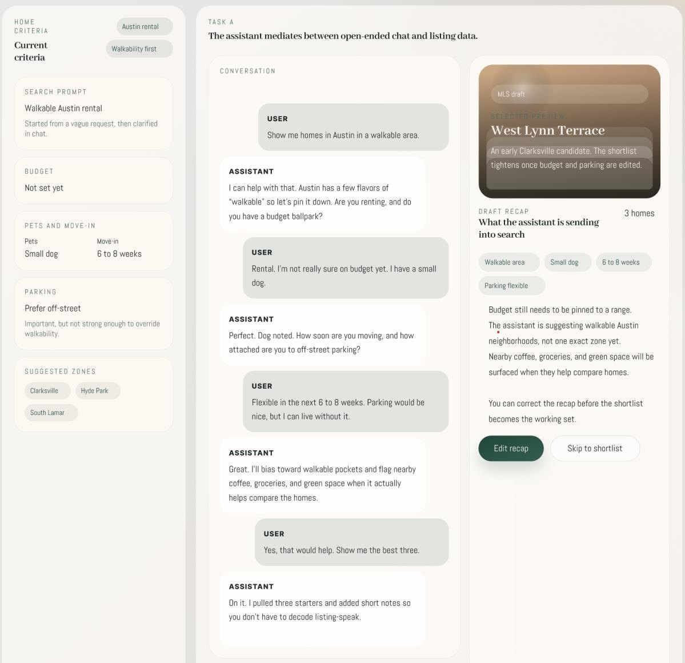
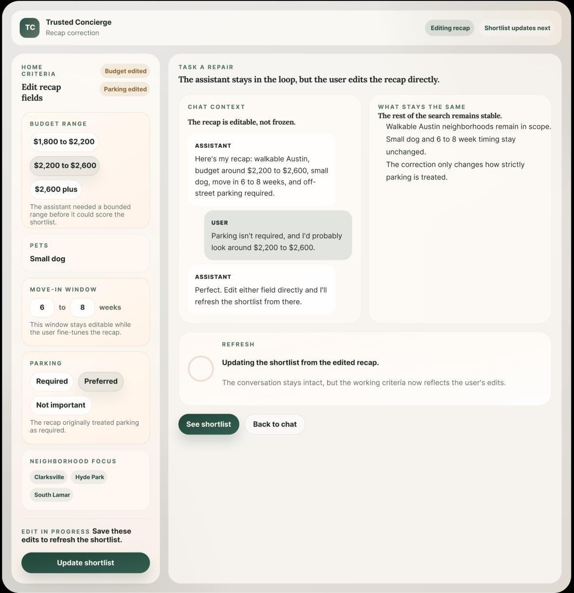
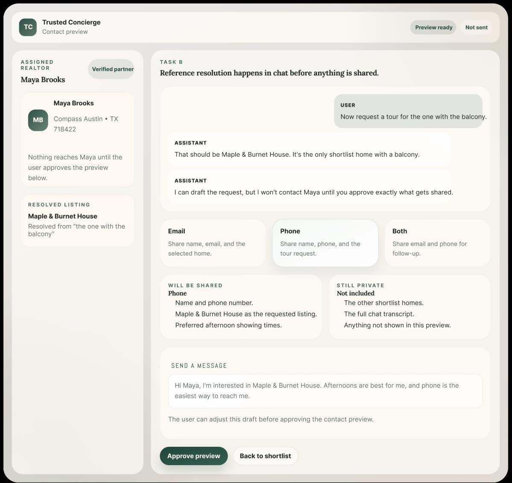

Renting or buying is one of the largest financial decisions a person makes in a year, and it is the one they are least equipped to specify up front. You know you want somewhere walkable, somewhere the dog is allowed, somewhere you can be in by the end of next month. You do not know yet which of those is the one you would actually give up.
Every housing site asks you to know anyway. Pick a price band, tick the boxes, sort the list. That is a filter form pretending to be a conversation, and you end up with fourteen tabs open because nothing helps you reason across the listings.
Putting a chatbot on top does not fix it. I tested that too.
Filters demand exact constraints before you have enough context to set them well. You are translating a fuzzy goal into dropdowns, badly, on turn one.
Pure chat feels natural for a minute. Then you need to correct something, and you are retyping your whole search in prose to move one number.
So the design question was not "chat or filters." It was: which parts of this belong in language, and which parts belong in something you can point at and change?
What I built
Language is good at fuzzy goals, follow-up questions, and referring to a house as "the one with the balcony." Structure is better at editing a budget, picking a time slot, and approving what leaves the building. The prototype uses each where it is strong, and it shows you the seam.



What six sessions actually said
Moderated think-aloud walkthroughs, about 45 minutes each, six participants aged 27 to 46 with a mix of renting and buying experience. Wizard of Oz, because there is no listing feed behind it. I was testing whether the interaction model reads as clear and trustworthy, not whether the recommendations are any good. I asked three questions.
The number I did not like
I built the consent preview to solve the discomfort. Then comfort came back at 3 out of 5, which is the polite middle of the scale. It would have been easy to write that up as a win, because everyone praised the screen.
What they were telling me is that transparency is necessary and it is not sufficient. Showing someone exactly what you will send answers "what is happening." It does not answer "who is this person and why them." The follow-ups were consistent: is this realtor verified, why was she assigned to me, where did this listing detail come from, how do I know you are not sending more than you are showing me.
That is a different design problem. It is not disclosure, it is legitimacy, and one screen cannot carry it. Trust is a process, not a screen, and the reason I can say that is that I built the screen and measured what it left behind.
The other finding that changed my mind: people did not want abstract reasons. Four of six asked for consequences in plain housing terms. "This one fits better" persuaded nobody. "Closer to groceries, worse parking, about 200 over your range" persuaded everybody. Explanation has to live in the domain the user is actually standing in, not in the model's vocabulary.
What it would take to be real
The Figma prototype proves the interaction. It proves nothing about the data, because there is no data. So the next step was to rebuild the flow as an actual interface and see which parts survive contact with code.
Open the coded walkthrough →See the Figma file
That version runs on Austin sample data, and the honest gap is the same one the report ended on: it needs a real listing feed. MLS access is the blocker, and it is a business problem rather than an engineering one. Until then the consent screen is telling the truth about a house that does not exist, which is a fine way to test an interaction and a poor way to ship a product.
The same flow is what Deal Lens applies to St. Louis tax-sale property, where the stakes are higher and the data is public. Different buyer, same three moves: show the interpretation, make the correction cheap, and stop before you act on someone's behalf.
Why I keep coming back to this one
The pattern is not really about housing. Any time software is about to do something on your behalf and money is involved, the same three questions show up, and almost nothing in the market answers them at the interface: what does it think I asked for, how do I fix it when it is wrong, and what exactly is about to leave the building with my name on it.
Payments have spent two years solving the first half of that, at the protocol layer, in the plumbing. The half that a person has to look at and press a button on is still mostly empty. This project is the closest thing I have to a study of that half, and it came out of a housing search.